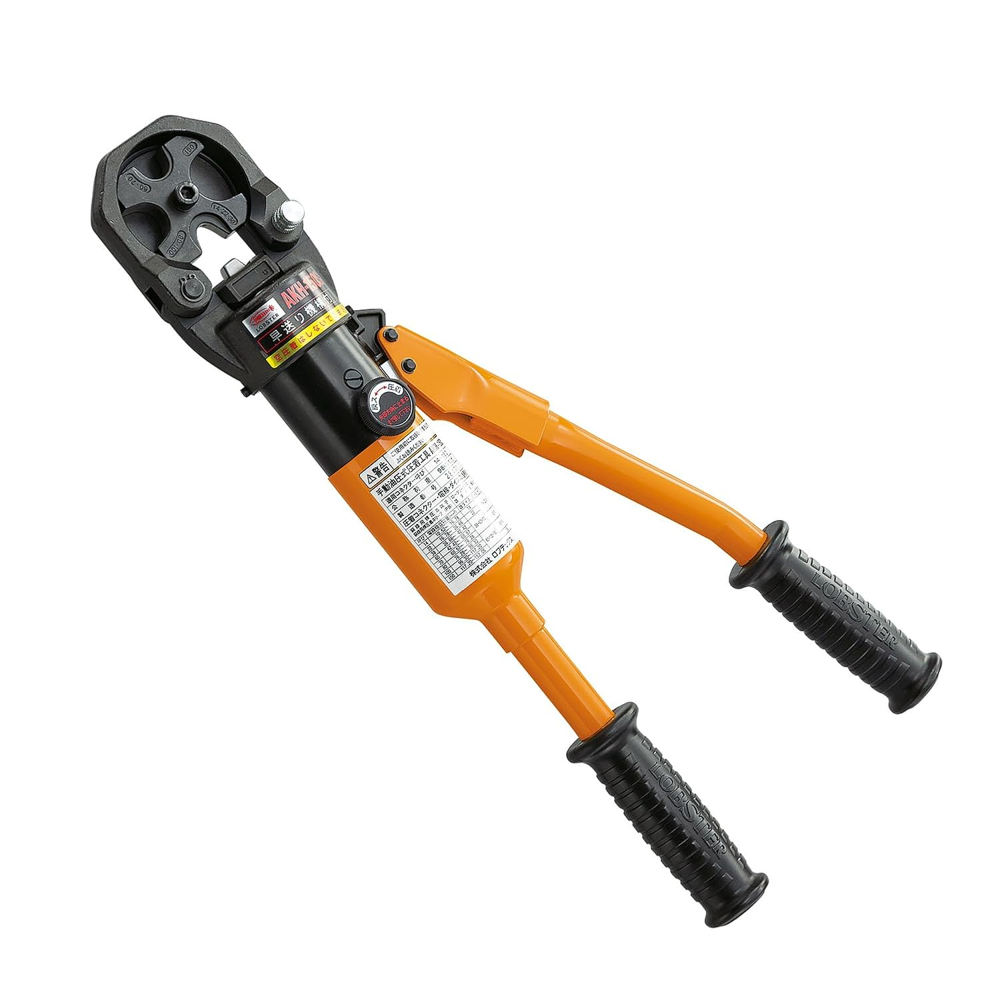
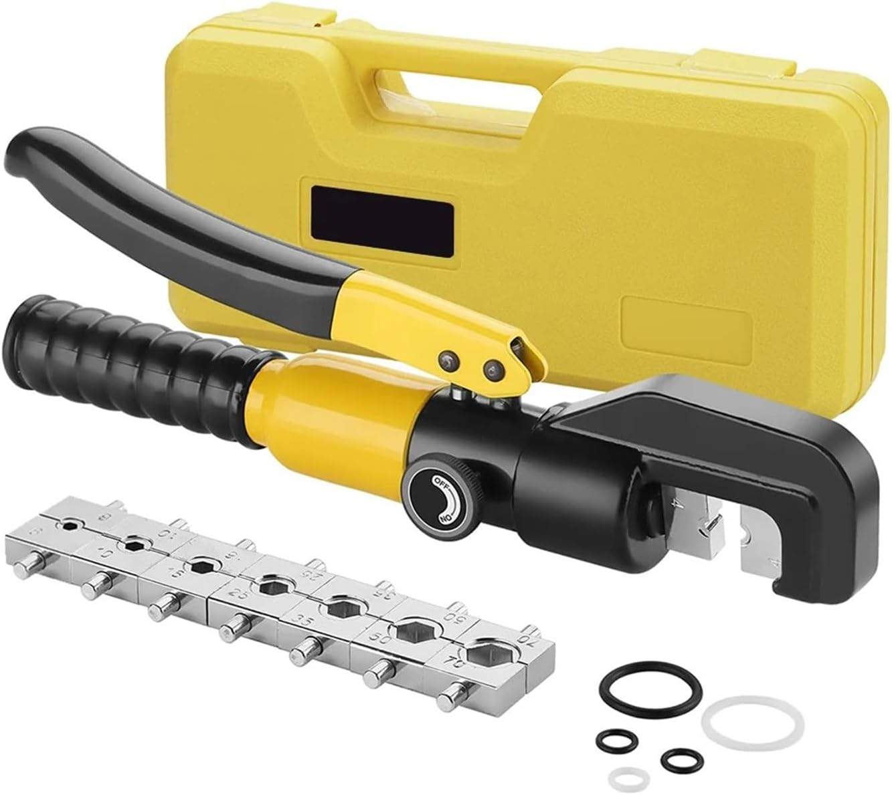

向いている人
- 電動と手動油圧の使い分けで迷っている人
- 圧着本数と導入コストのバランスを見たい人
- 最初の1台と追加導入のタイミングを知りたい人
電動圧着機と手動油圧圧着機は、どちらが絶対に上という工具ではありません。
電動は本数が多い現場で作業テンポと疲労軽減に強く、手動油圧は導入コストを抑えながら太物圧着に対応しやすいのが特徴です。
月数回レベルなら手動油圧、週次以上で圧着本数が多いなら電動が判断しやすいです。迷う場合は、手動油圧で始めて作業量が増えたら電動追加が現実的です。

先輩電動と手動油圧は「どっちが最強か」じゃなくて、圧着本数と出番で決めるのが実務的だよ。

新人低頻度なら手動油圧、多本数なら電動という見方ですね。
表だけで迷う場合は、まず「1週間あたりの圧着本数」で考えると判断しやすいです。
| 判断項目 | 電動圧着機 | 手動油圧圧着機 |
|---|---|---|
| 最初の導入コスト | 高め。本体に加えてバッテリー運用も考える。 | 抑えやすい。本体中心で導入しやすい。 |
| 作業頻度 | 週次〜毎日運用でメリットが出やすい。 | 月数回〜低頻度運用で選びやすい。 |
| 圧着本数 | 多本数で差が大きい。 | 少本数なら実用十分。 |
| 疲労と作業テンポ | 疲労を抑え、工程を安定させやすい。 | 本数が増えると疲労・時間負担が増えやすい。 |
| 導入の考え方 | 本数が多い現場の主力として導入。 | まず導入し、出番が増えたら電動を追加。 |
月数回レベルなら手動油圧で十分なことが多く、週次以上で圧着作業が固定化しているなら電動導入を検討しやすいです。
電動圧着機は、圧着本数が多い現場で効果が出やすい工具です。作業テンポを保ちやすく、疲労を抑えやすいのが大きなメリットです。
継続して出番があるなら、初期費用より作業効率のメリットが出やすくなります。
本数が多いほど、手動との疲労差・時間差が分かりやすくなります。
幹線や太物が多い現場では、電動化による負担軽減を感じやすいです。
本体価格だけでなく、バッテリーや充電器の運用も含めて判断します。
手動油圧圧着機は、出番が少ない現場や、まず太物圧着に対応したい場合に導入しやすい工具です。
使用頻度が高くないなら、手動油圧から始める方がコストを抑えやすいです。
現場の圧着量を見極める段階では、手動油圧スタートが現実的です。
作業量が増えてきたら、電動追加を検討するタイミングです。
端子サイズとダイス対応が作業条件に合うか、購入前に必ず確認します。
現行記事の商品画像とAmazonリンクを維持して、電動2機種・手動油圧2機種を整理します。

本数が多い現場で、作業テンポと疲労管理を両立しやすいモデルです。
毎週〜毎日の圧着作業があり、主力機として長く使う前提で選びたい人に向いています。
初期費用より運用効率を重視したい現場で候補にしやすいです。
AmazonでEZ46A4K-Bを見る
圧着回数が多い現場で、安定して作業を進めたい場合に検討しやすい機種です。
手動では作業時間や疲労が気になってきた時の追加候補として見やすいです。
AmazonでEV-250DLを見る
使用頻度がそこまで高くない現場で、まず信頼できる1台を持ちたい場合に向いています。
手動油圧の基準候補として見やすく、低頻度から中頻度の現場で導入しやすいです。
AmazonでAKH150Sを見る
初期投資を抑えて導入し、必要十分な範囲で使いたい場合に選びやすい機種です。
使用頻度が高くない場合や、まず圧着作業に対応したい段階で候補になります。
AmazonでYQK-70を見る最初から高額な電動を入れるべき現場は、圧着本数が継続して多い現場です。
それ以外は、手動油圧で開始して出番が増えた時点で電動追加の方が、コストと効率のバランスを取りやすくなります。
週次で圧着作業が固定化したら電動導入を再検討。月数回レベルなら手動油圧継続でも実務上は問題ないケースが多いです。
A. 低頻度なら手動油圧、週次以上で本数が多いなら電動が判断しやすいです。
A. 手動油圧で運用していて、作業時間や疲労が継続的に負担になった時が電動追加の目安です。
A. 価格だけだと失敗しやすいです。作業頻度と圧着本数を合わせて判断するのが安全です。
※当サイトはAmazonアソシエイト・プログラムに参加しており、適格販売により収入を得ています。